This first project is a bunch of assets used in a rebranding of an organization called Projekt Gap. Projekt Gap is focused on holding community video game tournements with cash prizes. These assets were used for the brands social media, and twitch channel.
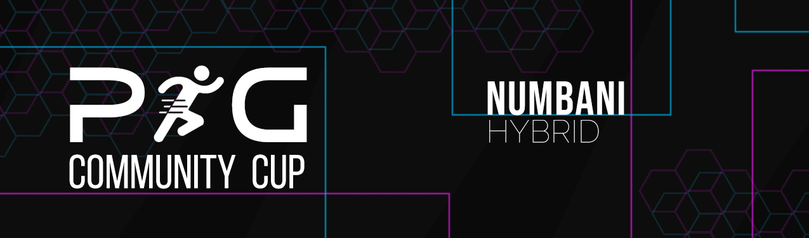
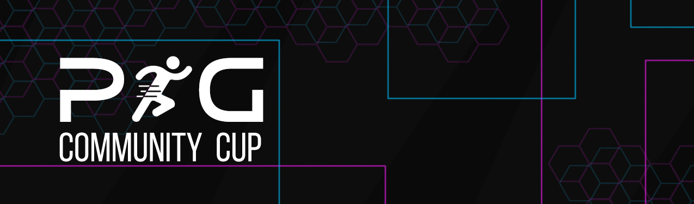
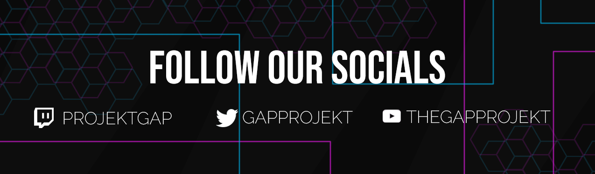
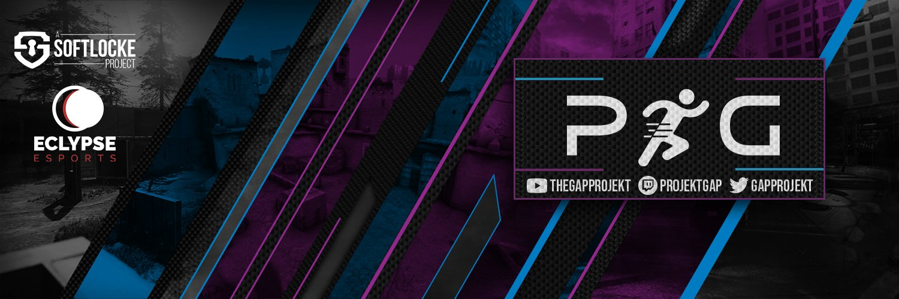
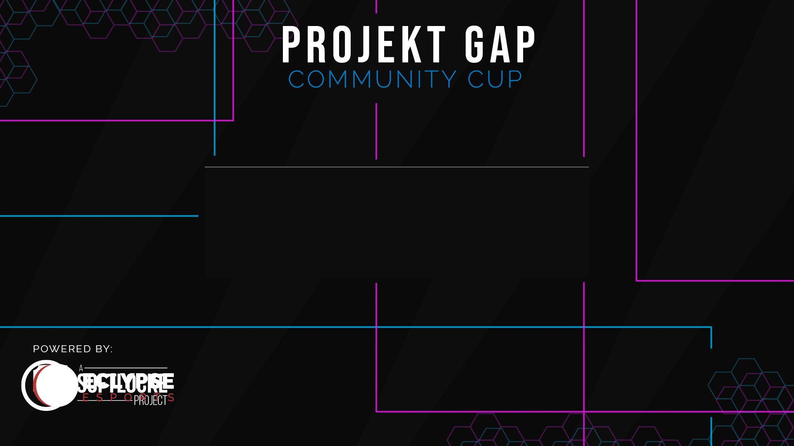
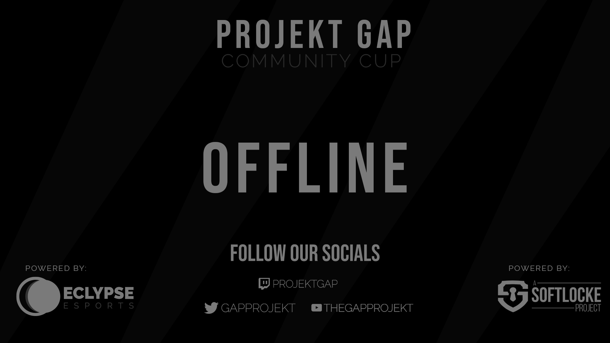
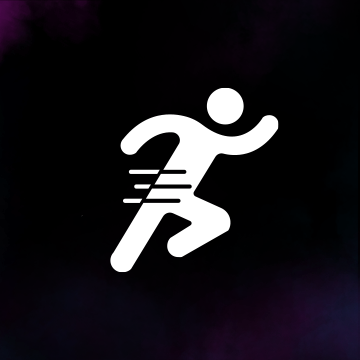
These are practice instagram teasers and promotional posters I made for the evergreen lecture series.


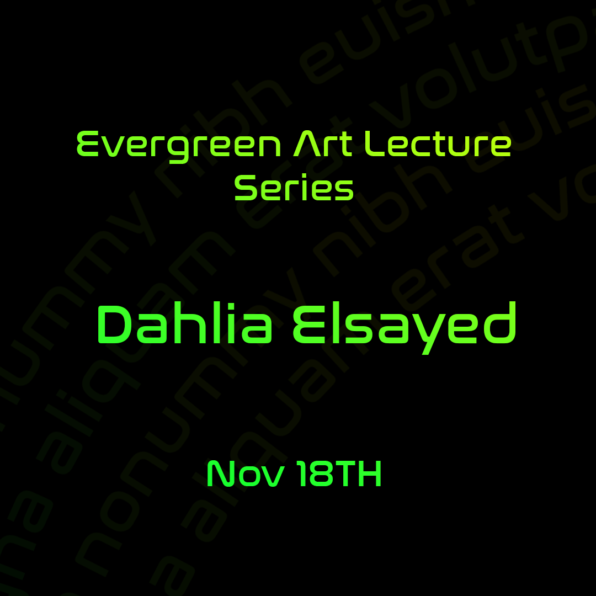
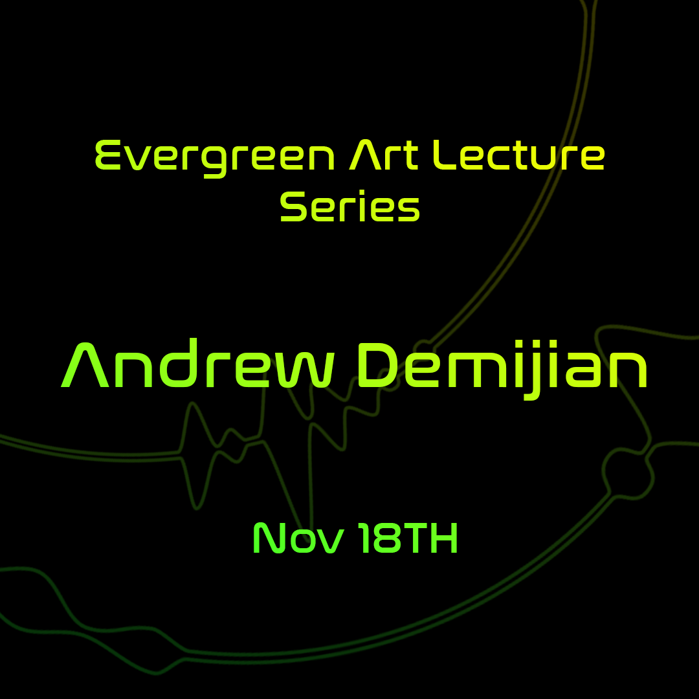
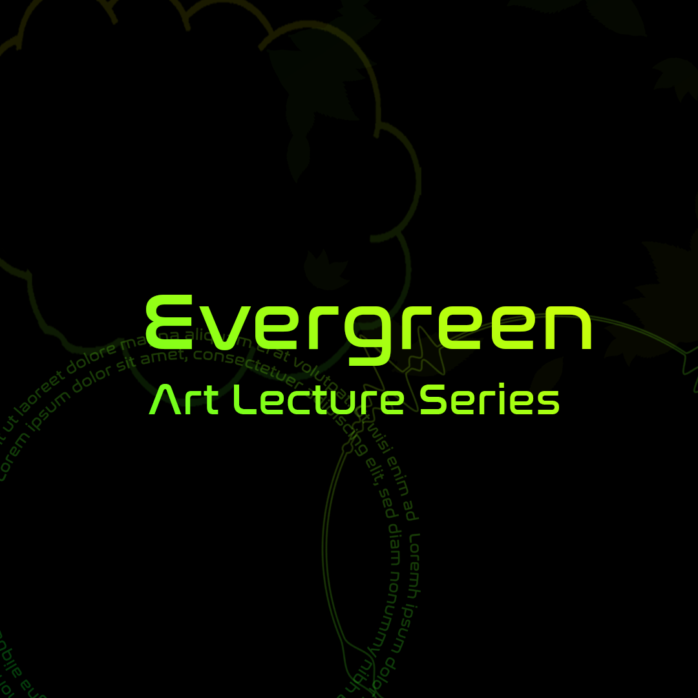

This is my branding of an imagined grand opening of the Roskilde Cathedral in Denmark.
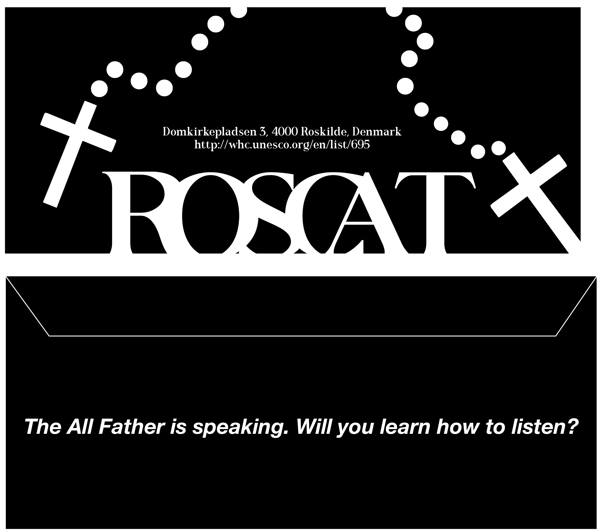
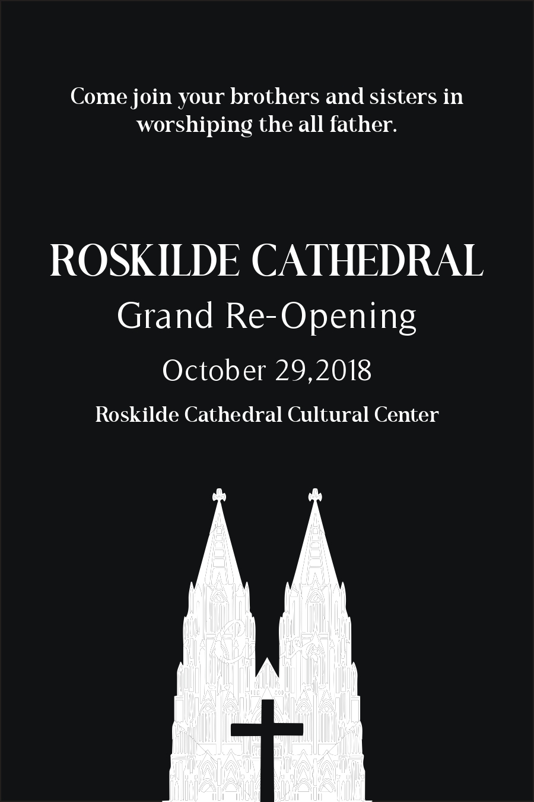
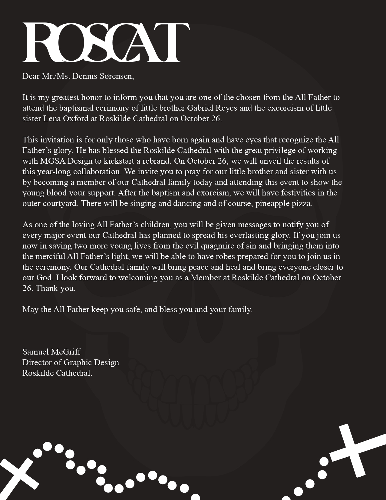
This is an after effects typography animation of a haiku from Avatar, the Last Airbender